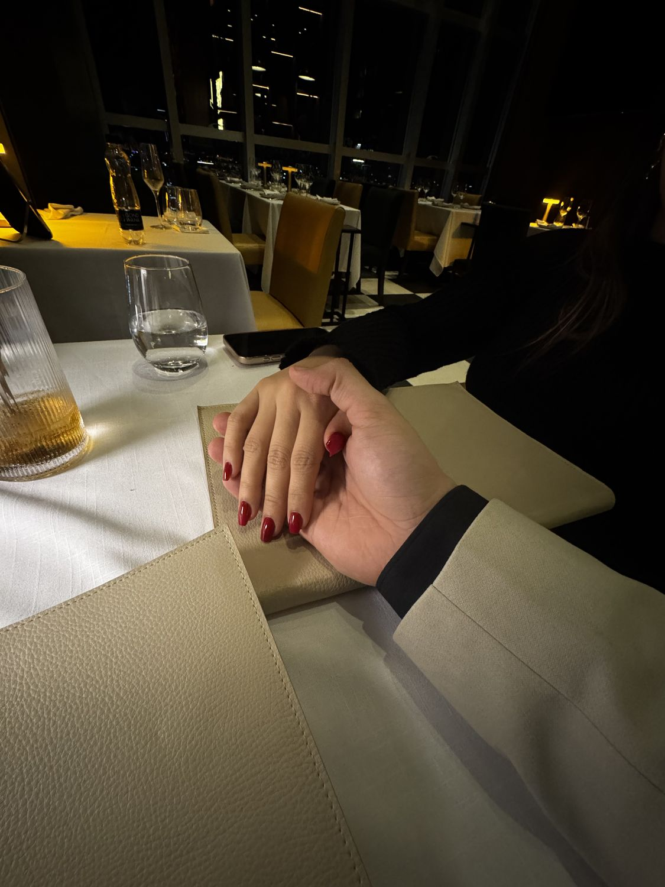
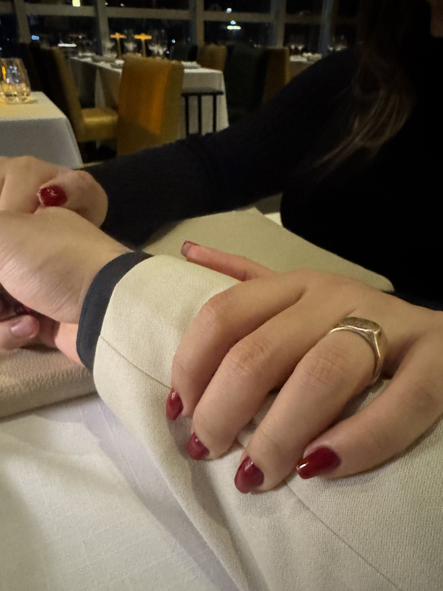
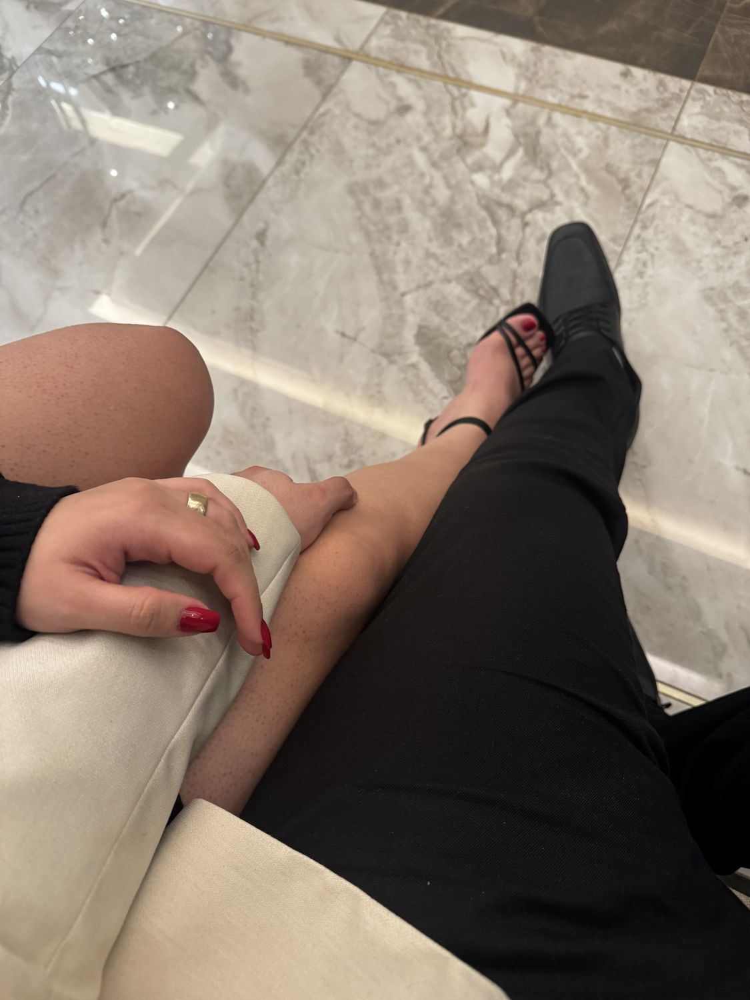
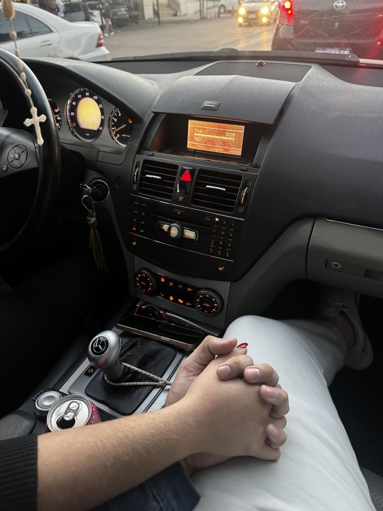
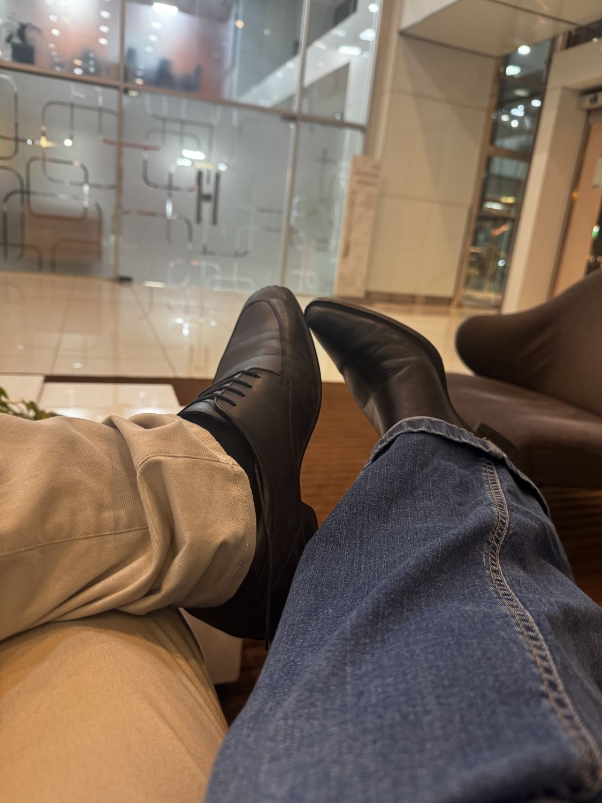
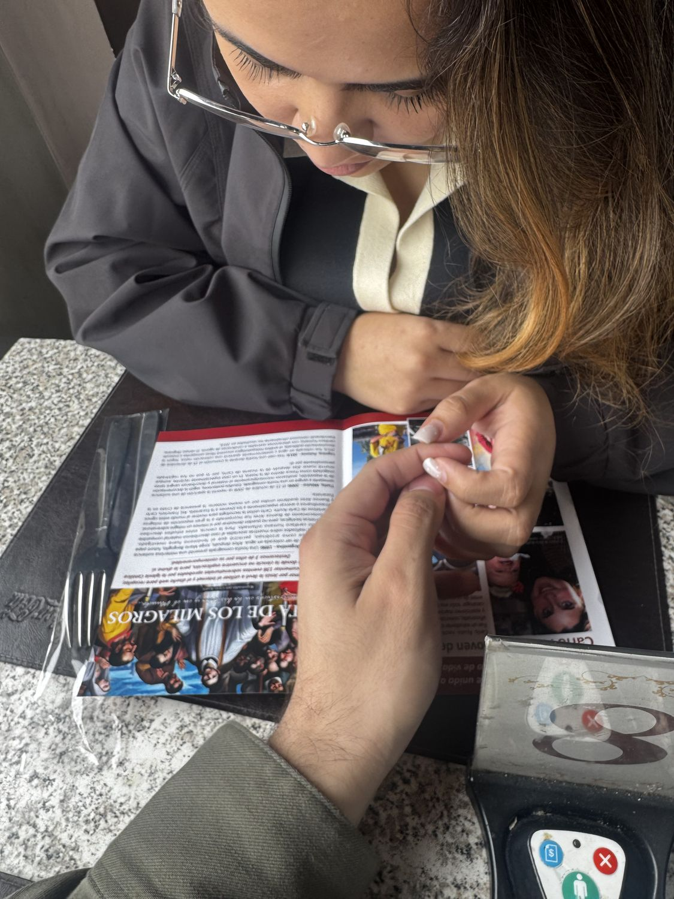
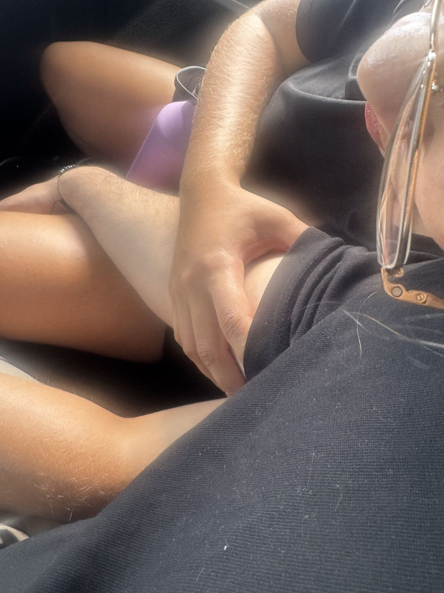

19 de julio, casi medianoche
Dos meses después, tu mano ya descansaba sobre la mía con mucha ternura.
Llegamos a la medianoche de mi cumpleaños, vos habías vuelto de Acahay.
Me acuerdo de tus uñas rojas, tu vestido negro y tus tacones de hilo que se atan. Y de no querer que esa cena se acabara.

Esa misma noche, un rato después
Ya era 20 de julio, el día de mi cumpleaños, y seguíamos sin soltarnos.
Nadie tenía apuro por irse.
Me mostraste que había maneras diferentes de amar.

9 de agosto, atardeciendo
Te habías accidentado en Ypacaraí y recuerdo que corrí a buscarte aunque no te hayas lastimado, sólo para tener una excusa para verte.
Era capaz de recorrer la distancia que sea con tal de estar un segundo contigo.
Me enseñaste géneros musicales nuevos, como el bolero glam.
Daniel, Me Estás Matando: es la canción que suena acá arriba.

17 de agosto
Cuando hicimos match de zapatos.
Sin hacer nada más. El hecho de estar a tu lado siempre resulta ser mi plan favorito.
Me enseñaste guaraní.
Soy pésimo hablando, pero vos me seguís corrigiendo y enseñando con paciencia.

10 de octubre, por la mañana en Lido Bar
Recuerdo que fuimos a buscar tu ropa para tu viaje, recorrimos varias tiendas para tener todas las cosas que necesitabas.
Recuerdo que llevaba tu sostén en una mano y una chica me dijo: «¿No será mejor que te guarde eso?»
Sanaste mis heridas, una por una.

1 de noviembre
Así de cerca.